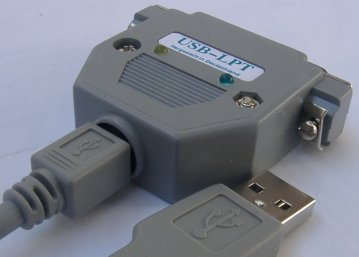
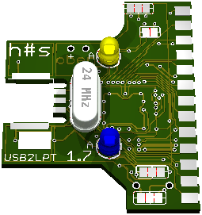
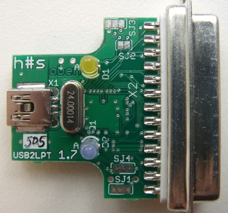
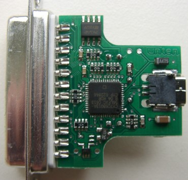

Software⚓
- Circuit Diagram and
PCB Silkscreen,
Source
 for PCB software
Eagle
for PCB software
Eagle
- Firmware same as Revision 1.3

Keywords: USB, LPT, parallel, parallel port, printer port, converter, adaptor
To USB2LPT — Overview
| instead | now | Marking | GND current | output current | options | attention |
|---|---|---|---|---|---|---|
| LD1117S33 | TPS79733DCK | ATF | 1,3 µA | 50 mA (190 mA typ.) | PowerGood output | Populate C4 |
| TPS71533DCK TPS71533QDCK | AQI ANW | 3,2 µA | 50 mA (125 mA min.) | – | ||
| TPS71433DCK | CVH | 80 mA (100 mA min.) | ||||
| TPS77033DBV | PCXI | 17 µA | 50 mA (340 mA typ.) | inverse enable input (not used here) | Do not populate C4!
Instead, populate electrolytic or tantalum capacitor 10 µF into two holes beneath C4. This is because ESR must have a minimum for stable operation. | |
| TPS78833DBV | PGTI | 150 mA (350 mA typ.) | ||||
| TPS76933DBV | PCNI | 18 µA | 100 mA (350 mA typ.) |
The overall current consumption of this device in USB idle state
should now be about 500 µA, as required by USB specification.
(The EZUSB-FX2 chip itself contributes 500 µA:-)


for PCB software
Eagle
{kind=link}
{kind=link}